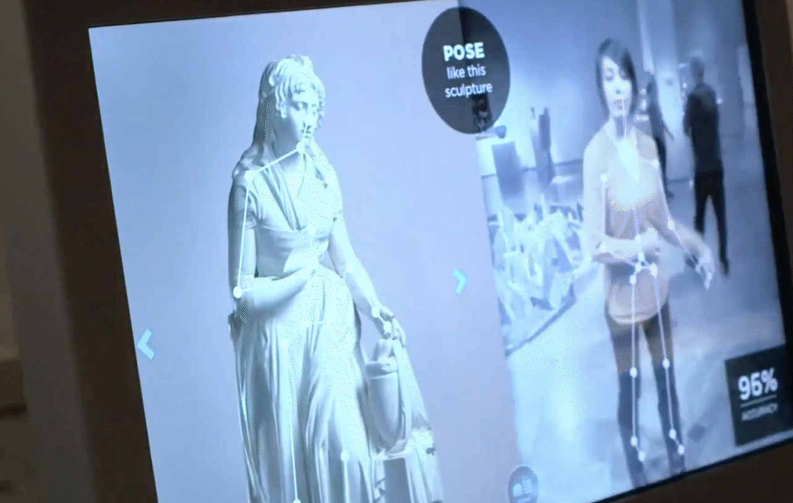
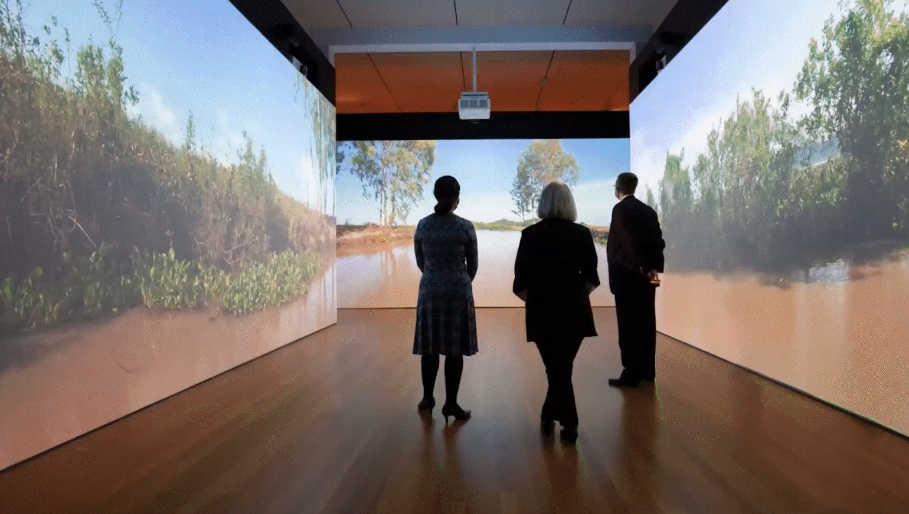
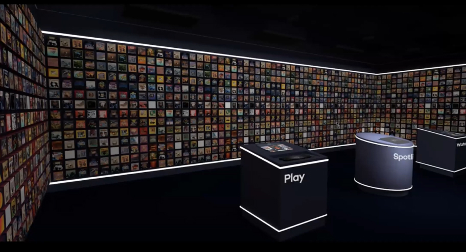
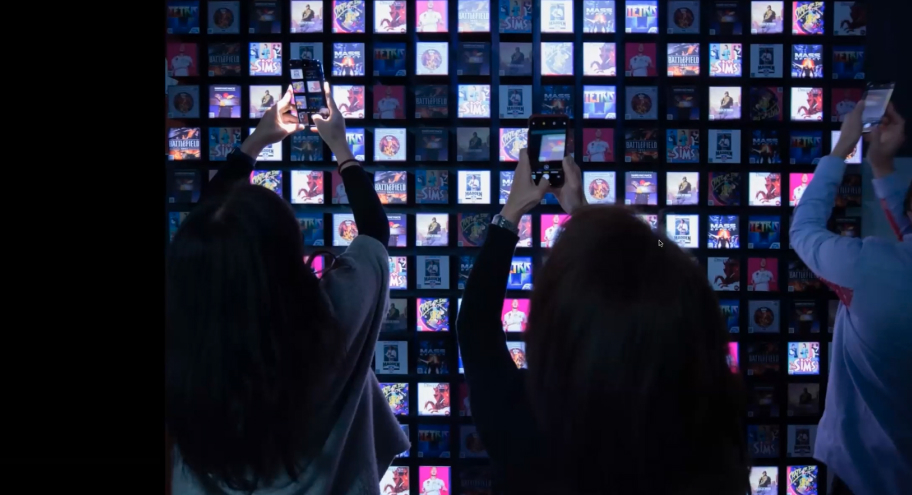
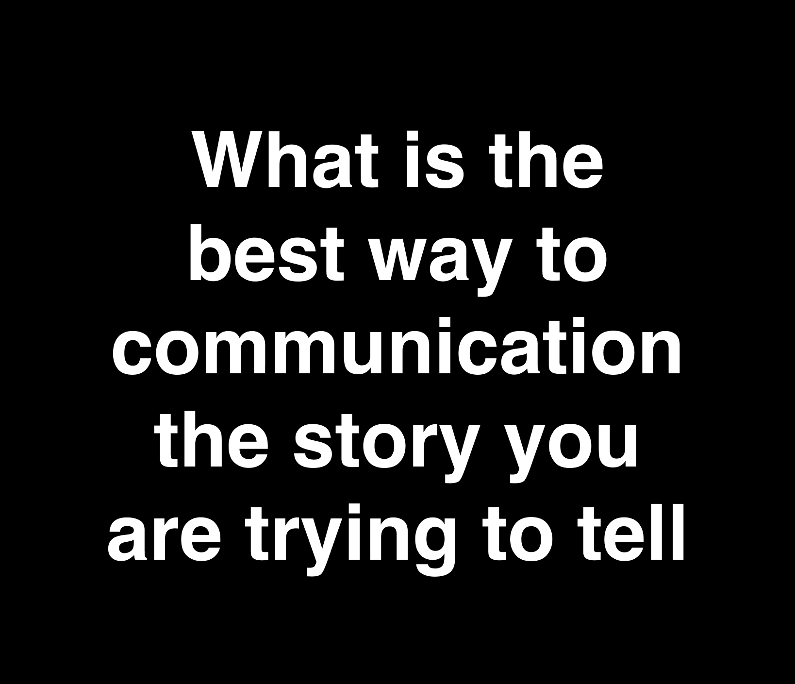

Lynn is the co-founder and partner of Dome, an experience design studio in New York City. She is a multi-disciplinary designer and creative director in experience design, graphic design and built environments. She is also Director of the MPS Communication Design at Parsons School of Design. Previously she was an experience design lead at SYPartners, collaborating with strategists and company leaders in transforming their brand. She was a Senior Designer at Local Projects from 2011–2013, designing and overseeing graphic design, interactive, and media projects for museums and cultural institutions. She designed at Fathom Information Design in Boston creating interactive tools and computational data visualizations.
Seat at the Table (2020)
Institute for Women's Health and Leadership

Reveal Krsna: Cambodia trip Holy mountain
The exhibition at the Cleveland Museum of Art combines motion graphics, films, interactive media, and mixed reality, bringing visitors into a special world of ancient Cambodian sculptures, including physical and digital. The HoloLens mixed reality experience, developed in cooperation with Interactive Commons, guides visitors through the complex story of the discovery, origin, and restoration of Krishna sculptures through the use of enhanced holograms, soundscapes, and narration movies. Dome’s media strategy and design, creative direction, and production.
Lobby Experience & Website
Entertainment Tech Company   